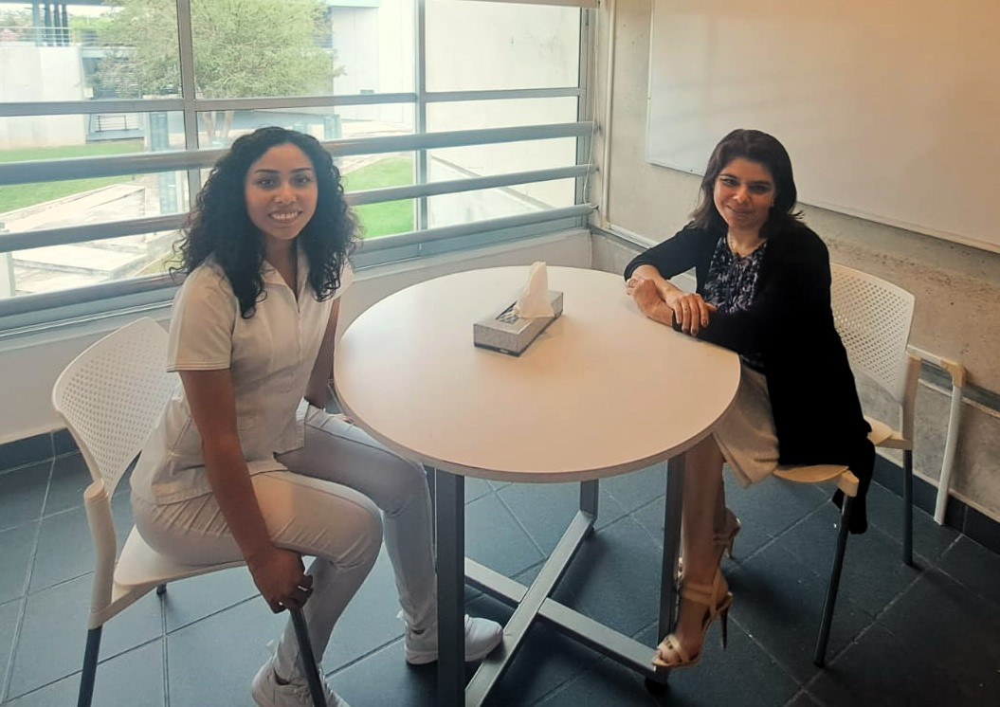

Estamos aquí para ayudarte a conocerte mejor, fortalecer tus recursos personales y cuidar tu bienestar integral.


Coordinadora de Acompañamiento Psicológico

Encargada de Acompañamiento y Sistematización de Procesos

Encargada de Acompañamiento y Prevención de Conductas de Riesgo
Responsable de Acompañamiento y Salud Mental
Estamos en el Edificio Central de la Universidad. Contáctanos: bienestar@marista.edu.mx Tel: 9429700 ext. 1225